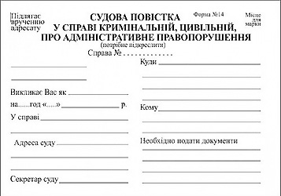
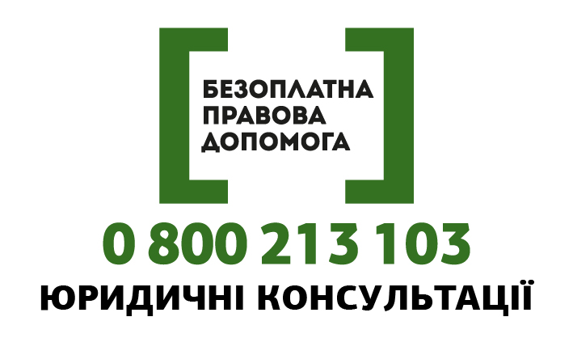
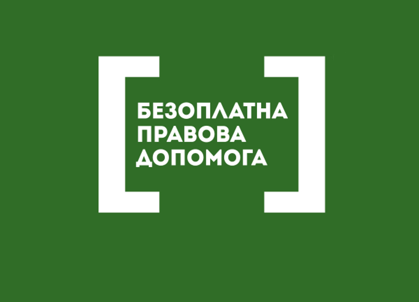

Cвідок є дуже важливим учасником кримінального провадження, тому має власні права та обов’язки.
Свідок має наступні права: (натискайте на пункти щоб дізнатися більше):
Свідки мають наступні обов'язки (натискайте на пункти щоб дізнатися більше):
До початку допиту свідок має право отримати інформацію про справу, у зв’язку з якою його викликано для надання свідчень, а також чому саме його було викликано. У більшості випадків ця інформація вже відома, оскільки допит більшості свідків проводиться ще до суду. Однак, якщо Ви не отримали такої інформації, Вам необхідно звернутися до слідчого/прокурора або судді із запитом про її надання.
Ви можете запросити адвоката, який надаватиме Вам правову допомогу під час надання свідчень та участі у процесуальних діях. Якщо Ви не можете найняти собі адвоката, ви завжди можете звернутись до відповідного місцевого центра з надання безоплатної вторинної правової допомоги та дізнатись, чи маєте Ви право на безкоштовного адвоката. Певні категорії осіб мають право на безоплатну правову допомогу коли їх викликають до суду в якості свідків.
Ви маєте право розуміти, що відбувається у судовому провадженні, в якому ви берете участь. Якщо ви відчуваєте, що вам потрібний переклад, рекомендується у письмовій формі завчасно повідомити про це слідчого/прокурора/суд. Це необхідно, оскільки організація надання послуг перекладача потребує певного часу. Ви також можете відмовитися від послуг перекладача, якого вам надали, якщо ви йому не довіряєте або маєте сумніви щодо його професійної кваліфікації.
Якщо Ви відчуваєте, що можете обмовити себе (тобто сказати щось, що може бути використане для обвинувачення Вас у вчиненні злочину), або якщо Ви є родичем* підозрюваної або обвинувачуваної особи, Ви маєте право відмовитися давати показання. Це право передбачено статтею 63 Конституції України.
Однак, це не звільняє вас від обов’язку з’явитися у суді особисто. Ви маєте право відмовитися давати свідчення тільки під час судового засідання, щоб суд міг занести це до протоколу.
* До близьких родичів та членів сім’ї належать чоловік, дружина, батько, мати, вітчим, мачуха, син, дочка, пасинок, падчерка, рідний брат, рідна сестра, дід, баба, прадід, прабаба, внук, внучка, правнук, правнучка, усиновлювач чи усиновлений, опікун чи піклувальник, особа, яка перебуває під опікою або піклуванням, а також особи, які спільно проживають, пов’язані спільним побутом і мають взаємні права та обов’язки, у тому числі особи, які спільно проживають, але не перебувають у шлюбі
Вас не можуть допитувати як свідка (тобто ви можете відмовитись давати показання) у наступних випадках:
Ви маєте право використовувати письмові нотатки під час надання свідчень. Якщо ви знаєте, що вас попросять дати показання щодо певних цифр чи іншої інформації, яку вам складно запам’ятати, ви можете використовувати письмові нотатки. Щоб уникнути будь-яких непорозумінь, краще повідомити суддю про це на початку допиту, що він міг перевірити ваші записи для забезпечення справедливості процесу.
Ви не можете зачитувати свої записи, а лише використовувати їх довідково.
Ви маєте право на відшкодування витрат на проїзд та деяких інших витрат, коли вас викликають до суду. Більш детальну інформацію можна знайти у розділі “Компенсація“ нижче.
Після проведення допиту працівником правоохоронних органів ви маєте право ознайомитися з протоколом допиту. Уважно прочитайте протокол та не підписуйте його, якщо не впевнені, що все записано правильно. Якщо ви бачите, що певна інформація передана не зовсім точно, вимагайте внесення змін, доповнень чи пояснень. Якщо слідчий чи інша особа, яка проводила допит, не бажає змінювати протокол, самостійно від руки запишіть поправки та зауваження на останній сторінці протоколу. Якщо на цій сторінці немає місця, зробіть на ній примітку, що ви викладете свої коментарі на окремому аркуші. Після цього запишіть свої зауваження, доповнення та пояснення на окремому аркуші.
Для забезпечення власної безпеки, свідки мають право просити про захист. Більше інформації можна знайти у розділі. «Захист свідків»
Свідки мають наступні обов'язки (натискайте на пункти нижче щоб дізнатися більше):
Під час здійснення досудового розслідування та судового розгляду справи слідчі, прокурори та слідчі судді мають право викликати свідків для допиту та/або участі в інших процедурних діях.
Якщо ви отримали виклик, ви зобов’язані з’явитися до слідчого, прокурора, слідчого судді або суду. Інколи показання свідка є єдиним доказом скоєння злочину, і якщо свідок не з’явиться, суд не матиме можливості притягнути винного до відповідальності. Тому дуже важливо, щоб ви серйозно ставились до виклику.
Якщо, ви отримали судову повістку, і без поважної причини не з’явилися до суду або не повідомили заздалегідь про причини неявки, вас можуть оштрафувати. Більш того, у разі неявки за викликом, вас, навіть, може доставити до суду поліція.
Свідки зобов’язані надавати правдиві показання на етапі досудового розслідування та під час судового розгляду справи. Свідки мають право відмовитись давати показання лише за певних обставин, наприклад, для збереження конфіденційності клієнта або за умови ризику обмовити себе або членів своєї родини. Надання завідомо неправдивих свідчень слідчому, прокурору, слідчому судді або суду або відмова надавати свідчення слідчому, прокурору, слідчому судді або суду є злочином відповідно до Кримінального кодексу України, за який вас можуть притягнути до кримінальної відповідальності.
Визначення надійності свідка є важливим аспектом забезпечення відправлення правосуддя. Тому свідкам можуть ставити запитання стосовно їхньої здатності сприймати обставини, щодо яких вони дають свідчення, а також щодо інших обставин, які можуть бути важливими для визначення надійності свідка.
Сторона у судовому процесі може надавати таку інформацію, яка спрямована на доведення ненадійності свідка. Така інформація може містити докази про надання завідомо оманливих свідчень, брехні, шахрайства та про інші дії, які можуть поставити під сумнів надійність свідка.
Свідок зобов'язаний відповідати на запитання, спрямовані на визначення достовірності свідчень.
Також свідкам можуть ставити питання стосовно їхніх попередніх показань, які можуть суперечити їхнім свідченням в суді.
Не розповідайте про обставини справи та процесуальні дії, що проводилися під час провадження, якщо у вас немає письмового дозволу на це від слідчого/прокурора/судді. Інакше це може зашкодити слідству. Загалом, щоб уникнути будь-яких непорозумінь, про справу можна говорити тільки зі своїм адвокатом (якщо він у вас є).
На різних етапах кримінального провадження до процесу долучаються різні учасники кримінального правосуддя. Вони відрізняються від інших осіб (наприклад, спостерігачів на судовому слуханні) тим, що їхні ролі, права та обов’язки чітко прописані у Кримінальному процесуальному кодексі.
Натисніть на відповідні пункти нижче, щоб дізнатись про те, чим займаються різні учасники кримінального провадження.
Слідчі, оперативники та детективи – це працівники правоохоронних органів (Національної поліції, Служби безпеки України, Державного бюро розслідувань, Податкової поліції або Національного антикорупційного бюро). Всі вони мають конкретні слідчі повноваження, визначені Кримінально-процесуальним кодексом України та іншими законами.
Слідчі займаються розслідуванням, а оперативники здійснюють оперативно-розшукову діяльність (стеження, розшук, затримання тощо). «Детектив» – це порівняно новий термін для України, який об’єднує у собі функції слідчого та оперативника. На момент розробки цього сайту (січень 2019 року) детективи працювали лише у Національному антикорупційному бюро.
Прокурор відповідає за забезпечення дотримання законів під час досудового слідства шляхом забезпечення процесуального керівництва на етапі досудового розслідування та після завершення досудового слідства. Прокурор також представляє державне обвинувачення в суді.
Потерпілий/а – це особа (фізична або юридична), що зазнала моральної, фізичної або матеріальної шкоди в результаті злочину. Більше інформації щодо потерпілих та їхніх прав у процесі кримінального правосуддя Ви можете знайти в окремому розділі.
Кваліфікований юрист (адвокат), який консультує потерпілу особу. Представник потерпілої особи має процедурні права та несе відповідальність перед особою, яку він представляє. Однак деякі невід’ємні права потерпілий може реалізувати лише особисто.
Якщо потерпілим є неповнолітній або повністю чи частково недієздатна людина, її інтереси у кримінальному провадженні представляє законний представник.
Зазвичай, це родич або працівник соціальної служби.
Зазвичай, розслідування щодо конкретної особи починається з моменту, коли такій особі повідомляється про підозру або коли її затримують за підозрою у скоєнні злочину. З цього моменту особа вважається підозрюваною. До цього розслідування може здійснюватися без наявності конкретного підозрюваного, поки слідчий або прокурор не матимуть достатньо доказів, щоб повідомити про підозру конкретній особі.
Після завершення етапу розслідування у кримінальній справі, слідчий готує обвинувальний акт, який затверджується прокурором та направляється до суду. Тепер підозрювана особа вважається обвинувачуваною/обвинувачуваним. Відмінність між підозрюваним та обвинувачуваним є досить формальною, однак, на відміну від підозрюваного обвинувачуваний має додаткові права (зокрема, право бути присутнім на судовому засіданні, допитувати/ставити запитання свідкам тощо). Підзахисний може сидіти у залі судових засідань на лаві чи у кріслі, зазвичай, разом із захисником. Якщо він знаходиться під вартою, він може сидіти на спеціальному відгородженому місці (у скляній кабіні).
Експерт може залучатися будь-якою стороною судового процесу або призначатися слідчим суддею або судом. Це відбувається, коли виникає потреба отримати професійний висновок щодо конкретного питання, яке не належить до сфери права (наприклад, медичний висновок). Експерти надають висновок у письмовому вигляді, також їх можуть викликати для дачі усних показань стосовно питань, які стосуються справи. Висновки експертів використовуються як докази у кримінальному провадженні. Експерт несе відповідальність за завідомо неправильні висновки або невиконання своїх обов’язків у суді без поважних причин.
На відміну від експерта, який має конкретну ліцензію та відповідну реєстрацію, спеціаліст/фахівець, який залучається у кримінальному провадженні, має спеціальні знання та навички, необхідні для використання технічних або інших приладів. Він також може надавати консультації з питань, що вимагають спеціальних знань. Спеціаліст може залучатись під час розслідування або за рішенням суду під час судового розгляду справи для надання безпосередньої технічної допомоги (фотографії, плани, замальовки/креслення, взяття зразків для аналізу тощо).
Захисник – це адвокат, який захищає підозрювану/обвинувачувану особу.
Захисник має такі самі права, що й підозрюваний/обвинувачувана особа, яку він представляє. Наприклад, він має право подавати клопотання щодо здійснення процесуальних дій, оскаржувати рішення, дії чи бездіяльність слідчого, прокурора, слідчого судді, брати участь у слуханні справи та допитувати (ставити запитання до) свідків, збирати та представляти докази в суді та багато іншого.
Якщо підозрюваний чи обвинувачуваний є неповнолітньою або недієздатною особою, у кримінальному провадженні її представляє законний представник, який має право брати участь у процесі разом із підозрюваним/обвинувачуваним. Зазвичай, законним представником є родич або працівник соціальної служби.
Суддями можуть бути особи, які досягли 30 років, які мають юридичну освіту, істотний досвід роботи в юриспруденції та були призначені на посаду Президентом або Верховною Радою України. Вони носять чорну мантію і нагрудний знак, на якому зображено національний символ України – тризуб, а також ваги як символ правосуддя (Феміди). Справу може розглядати один суддя або колегія у складі трьох суддів (якщо висунуте обвинувачення передбачає покарання у вигляді більше 10 років позбавлення волі).
Якщо обвинувачуваному загрожує довічнє ув’язнення, справу розглядає колегія у складі трьох присяжних (див. нижче) та двох професійних суддів. У залі судових засідань вони, як правило, сидять за столом у президії перед усіма учасниками судового процесу. Судді виносять вирок (або інше рішення) після завершення судового провадження. Слідчі судді не приймають рішень по суті, але вони виносять рішення за поданими клопотаннями на етапі досудового розслідування справи.
Присяжні, за клопотанням обвинувачуваного, беруть участь у слуханнях справ в судах першої інстанції щодо злочинів, за вчинення яких передбачено довічне ув’язнення.
Присяжні можуть мати будь-яку професію, оскільки не існує вимог щодо професійної кваліфікації присяжних. Присяжним може бути громадянин України віком від 30 до 65 років, який проживає на території юрисдикції відповідного суду та володіє українською мовою. Органи місцевого самоврядування, тобто міські та обласні ради, приймають рішення щодо відбору присяжних. Якщо Ви бажаєте стати присяжним, зверніться до відповідного органу місцевої влади.
Якщо будь-який учасник кримінального провадження, включаючи свідків, не володіє українською мовою достатньою мірою, суддя, прокурор або слідчий зобов’язані забезпечити перекладача, який буде їм допомагати. Перекладач має залучатись з моменту, коли вперше виникає потреба в його послугах, для спілкування зі слідчим, прокурором або суддею.
Свідком є особа, яка викликана для надання свідчень про обставини, які їм відомі або можуть бути відомі. Свідки відіграють дуже важливу роль у кримінальному провадженні, оскільки часто суд виносить рішення на підставі показань свідків. Будь-ласка, клікніть щоб почитати більше про роль свідка в суді.
Коли хтось обвиняється у вчиненні злочину, свідком якого ви стали або ви маєте інформацію про злочин та вже надали свідчення, поліція передає отриману від вас інформацію до прокуратури. Прокурор направляє справу до суду разом зі списком свідків. Крім того, вас можуть включити до списку свідків, якщо за запрошенням поліцейського або прокурора вас залучали до проведення окремих слідчих дій у ролі понятого.
В ході підготовчого засідання суддя, зазвичай, розглядає список свідків та доручає працівнику суду їх викликати. Суд також може викликати свідків за клопотанням захисника. Ви отримаєте виклик до суду, який називається судова повістка.
Так виглядає типова судова повістка.
Як правило, свідок викликається не менше ніж за 3 дні до дати судового засідання. Цей період між викликом і явкою до суду дозволяє вам підготуватися до дачі свідчень в суді.
Зазвичай, ви отримаєте письмову повістку звичайною або електронною поштою, факсом або особисто від працівника суду (якщо перебуваєте в суді з певних причин). Однак, ви також можете отримати телеграму або телефонний дзвінок з проханням з’явитись на судове засідання у вказаний день та час для надання свідчень. Усі ці засоби виклику є дійсними.
Поруч із цим текстом наведений зразок типової повістки. Якщо ви отримали повістку, то це означає, що ви зобов’язані з’явитися на судове засідання у зазначений час та місце. Однак, суд може також надіслати вам виклик у формі повідомлення або листа.

Бюро та центри безоплатної правової допомоги безкоштовно надають юридичні консультації особам, які їх потребують.
Існує два види безоплатної правової допомоги:
Первинна правова допомога пропонується всім, хто перебуває під українською юрисдикцією (громадяни, особи без громадянства, біженці тощо), та надається безкоштовно.
Вторинна правова допомога надається представникам вразливих груп, зокрема малозабезпеченим, особам з інвалідністю, сиротам, дітям, позбавленим батьківського піклування, безпритульним дітям, дітям, які можуть стати або стали жертвами насильства в сім’ї, а також іншим категоріям осіб, визначених статтею 14 Закону.
Вторинна правова допомога (тобто представництво в суді) надається місцевими Центрами безоплатної правової допомоги потерпілим та свідкам, які відповідають певним критеріям.
Управління системою безоплатної правової допомоги здійснюється Координаційним центром з надання правової допомоги при Міністерстві юстиції України.

Залякування свідків відбувається тоді, коли хтось намагається погрожувати або тиснути на свідка з метою примушення останнього не надавати свідчення поліції чи суду або дати свідчення, сприятливі для однієї зі сторін кримінального процесу.
Залякування є кримінальним правопорушенням, передбаченим статтею 386 Кримінального кодексу України, якщо воно спрямоване на перешкоджання з’явленню свідка у суді, примушування свідків до відмови від надання свідчень, погроз на адресу свідка або його близьких родичів, а також підкуп свідка.
Якщо вас залякують або пропонують підкуп, ви маєте негайно звернутися до поліції та вимагати проведення розслідування.
Якщо вам погрожують, ви маєте повідомити про це особу, в провадженні якої перебуває кримінальне провадження та/або подати письмове звернення. Наприклад, можна повідомити слідчого / прокурора або суддю (залежно від того, на якому етапі знаходиться кримінальне провадження). Ви маєте надати інформацію про погрози на вашу адресу, а також будь-які дії насильницького характеру, яких ви зазнали.
Відповідно до чинного законодавства, рішення про заходи забезпечення захисту приймається слідчим, прокурором або суддею, у провадженні якого знаходиться справа. Ці заходи здійснюватиме Служба захисту свідків, ДСР (Департамент стратегічних розслідувань), НПУ (Національна поліція України) або відповідні підрозділи СБУ, НАБУ, ДБР; пенітенціарні органи; керівництво слідчих ізоляторів та ізоляторів тимчасового утримання; орган, відповідальний за дотримання податкового законодавства (Служба фінансових розслідувань).
Заходи із захисту свідків визначаються законодавством (Стаття 7 Закону України «Про забезпечення безпеки осіб, які беруть участь у кримінальному судочинстві»), відповідно до серйозності загрози для свідка. Такі заходи можуть передбачати особистий захист, захист житла та майна; надання спеціальних засобів особистого захисту та оповіщення про небезпеку, проведення закритого судового розгляду тощо.
Якщо поліція, прокуратура або інший відповідальний орган відхилив ваше звернення, ви можете оскаржити таке рішення у відповідному вищому органі або у суді. Рекомендуємо вам також звернутися до свого адвоката або найближчого Центру безоплатної правової допомоги щоб отримати інформацію про доступні можливості.
У цьому розділі ви знайдете практичні поради щодо отримання відшкодування та компенсації витрат, які пов’язані з виконанням обов’язків свідка.
Якщо вас викликають до суду чи поліції як свідка, ви маєте право:
Якщо ви є працівником юридичної особи (компанії, установи чи організації) ваш роботодавець зобов’язаний, відповідно до законодавства, виплатити вам середню заробітну плату за період часу протягом якого ви були відсутні на робочому місці.
Для цього, ви повинні мати письмове підтвердження (повістка або виклик до суду), видане судом та/або поліцією, в якому зазначається час, який ви провели в суді/поліції. У відділі поліції треба звернутися до особи, в провадженні якої перебуває справа, щодо якої вас викликали. В суді зверніться до секретаря судового засідання або помічника судді, які зазвичай відповідають за ці питання.
Якщо ви є самозайнятою або безробітною особою, ви маєте право на компенсацію, що розраховується за кожну годину пропорційно до розміру прожиткового мінімуму для працездатної особи, встановленого на 1 січня поточного року. (Розмір прожиткового мінімуму, встановлений відповідно до Закону про державний бюджет на 2020 рік, становить 2,102 грн).
Приклад розрахунку:
Ви приймали участь у судовому засіданні 2 лютого 2020 року з 10:00 до 12:00, також ви додатково витратили одну годину часу на проїзд до суду і назад. Отже, загальний об`єм витраченого часу складає 3 години. Тепер необхідно розрахувати суму прожиткового мінімуму для працездатної особи за одну годину. В лютому 2020 року було 20 робочих днів, загальна сума прожиткового мінімуму для працездатної особи складала 2 102 гривні: 2 102 / 20 = (105,10 грн). Один робочий день складається з 8 робочих годин: 105,10 / 8 = 13,14 грн..
Таким чином, компенсація за ваш витрачений час (за відрив від звичайних занять) складатиме 13,14 х 3 = 39,42 гривні..
Якщо у вас виникли питання, ви можете звернутися до суду або найближчого Центру безоплатної правової допомоги. .
Якщо вам необхідно з`явитися у місці, яке знаходиться поза межами міста/селища міського типу/села в якому ви постійно проживаєте, ви маєте право на відшкодування таких витрат:
Усі ці витрати, за винятком добових, повинні бути підтверджені квитком або квитанціями.
Постановою Кабінету Міністрів України від 02 лютого 2011 р. № 98 добові для відряджень службовців встановлено у розмірі 60 грн. на добу (згідно з законодавством станом на 01.11.2020 р.), а максимальна вартість оренду житла становить 600 грн на добу.
Щоб отримати відшкодування (компенсацію), ви маєте звернутися до слідчого або судді, який вас викликав. Слідчий або суддя складає постанову/ухвалу, в якій буде вказана сума відшкодування. З цією постановою/ухвалою вам необхідно звернутися до відділу Державної скарбниці за місцем складання постанови/ухвали.
Бажано зробити копії ваших квитків/чеків/квитанцій та долучити їх до заяви на отримання відшкодування, яку ви подаватимете суду/слідчому.
Певного зразка заяви не існує, але рекомендується зазначити в ній наступну інформацію:
В будь-якому випадку, радимо зв’язатися з вашим адвокатом або найближчим Центром безоплатної правової допомоги і отримати юридичну консультацію.